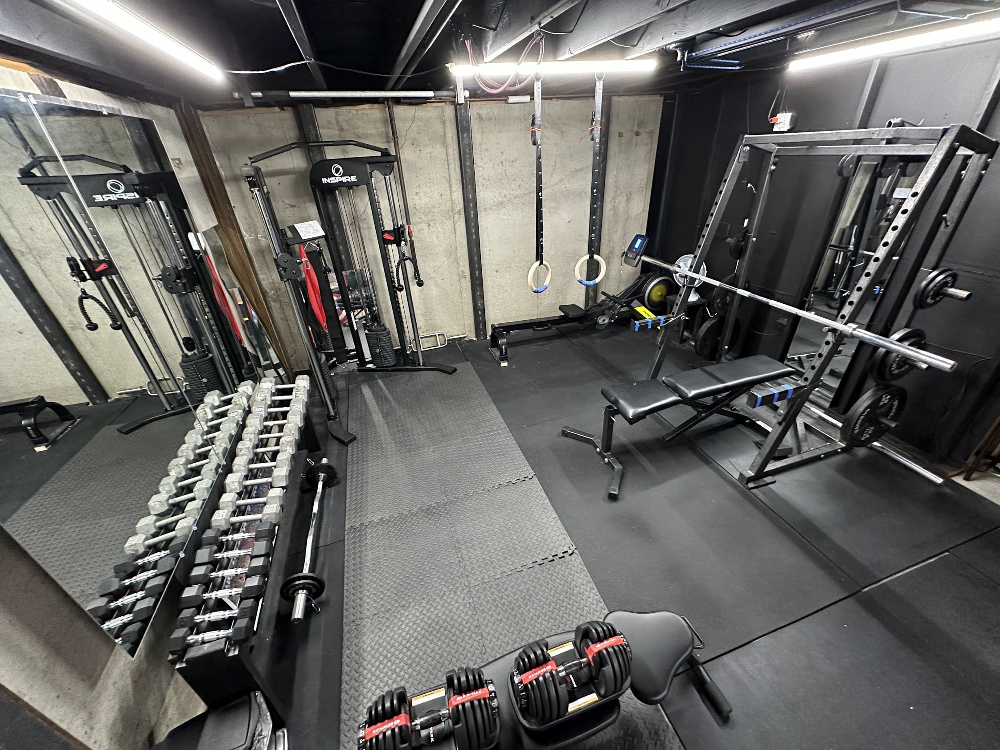

This Column is pretty singularly focused. I wrote it alongside a bunch of other stuff. I extracted this section for this post, and expanded on it a bit as I refine the other half for the next one. They were super unrelated.
Note: none of this is sponsored and I don’t make any money off these links… because I’m too lazy to do the work that would be required to make the $1 I’d feasibly be able to make from it. I don’t advertise on this site.
Home Gym Order of Priorities
My home gym is everything I have ever wanted in a home gym (except bumper plates and vertical space). Now that I have “completed” the “ideal”1 home gym that I dreamt up a decade ago and have lived with it for a year, here’s what I would recommend to someone who was in the same boat I was in a few years back: just getting started with in-home fitness.
The situation is you’re slowly accumulating stuff to build your home gym. You don’t want to get something then later have to replace it with something else. This is the order in which I would procure my gym equipment. As you progress down the list, each step you take opens up new options, doesn’t replace anything that came before it, and at any point you stop you’ll have something cohesive you can work with.
1. A Yoga Mat
If you only have 1 piece of equipment, a yoga mat the best one. It’s cheap, and small. You need a space to workout. Even if it’s not yoga. Rolling out the yoga mat is a great way to get your mindset right. You aren’t in your living room any more, you’re on your mat. Whether you’re doing yoga or calisthenics, you’ll benefit from having a place to do them. When you’re done, you can reclaim that spot on the floor and stow it away.
Melissa got me an oversized yoga mat to fit my oversized frame. I love that thing.
2. Olympic Rings
Next up, I recommend a pair of olympic rings. Like a yoga mat, these are cheap, light, and space saving. Useful for pull-ups, dips, inverted rows, stability push-ups, and lots of stuff I can’t do. If you don’t have a place to hang them, you’ll have to make one. It’s not too damaging to find some joists in the ceiling and hang up some $6 anchor points.
3. Adjustable Dumbbells
You can go with the handle + weights + locking collars kind or the dial-a-weight kind. I have the most popular/common type of dial-a-weight ones and I do like them.
We also have regular non-adjustable dumbbells, which are another option if you’ve got the space. Having both allow my wife and I to do the same workouts at the same time. When we do, I take the adjustable ones and they absolutely do the job.
4. An ADJUSTABLE Bench
Adjustable benches are more expensive than flat ones, but much better. A flat bench isn’t all that different from a stool. Adjustability is obviously necessary for things like incline presses and flies, but it also allows you to use the bench for stability while doing standing exercises, you can lean against it for reverse dumbbell flies, and it provides back support for overhead pressing movements (if back support is desired).
5. Floor Mats
At this point you need to start dedicating space. Having a place you go to exercise makes all the difference. You can start with foam mats or go straight to rubberized “horse stall mats”. I started with foam and moved up to the horse stall mats. Having both is not a bad thing.
Foam mats are obviously cheaper and easier to work with, but have a limited lifespan. If/when you’re upgrading to horse stall mats, do yourself a favor and also buy some plastic vapor barrier to prevent mold from growing on the bottom.
6. A Mirror
Honestly a mirror maybe should be higher up the list. Being able to see yourself for form checks and motivation is critical in a home gym setup and one of the things that made me really start to feel like I was in a gym, as opposed to a room with exercise equipment in it.
If you’ve got an American flag, chuck up there too. Cause all home gyms in America are legally required to fly a flag.
Next Big Purchases
Once you’ve accumulated everything above, you’ve got a perfectly respectable home gym for basic strength training, yoga, and HIIT-type workouts. From there, honestly, it gets super subjective and in accordance with your specific goals. Also it starts to get pretty expensive pretty fast.
Cardio Options
If you want to maintain better cardiovascular health and you don’t live in a place that’s suitable to doing outdoors stuff, the next thing might be a large piece of cardio equipment. There are a few types to consider.
Treadmills - the classic treadmill may have been invented as a tourtue technique, but they allow you to maintain a steady-state cardiovasular workout routine throughout the harshest months of the year.
Stationary Bikes - these are incredibly popular lately thanks to the pandemic & Peloton’s effective advertising. They are good for both steady-state cardio workouts and can be used as part of a HIIT routine. These may be a bit easier on your joints than a treadmill, and thus would be my preferred option in almost all cases.
Rowing Machines - rowing machines are a world of their own. There are water-based machines, air-based machines, and ones that rely on magnetic resistance. Like the stationary bike they can be used for both HIIT and steady-state type work. Unlike the stationary bike and treadmill, a rowing machine also works your upper body. From my experience, though, they can be agitating to those of us who are prone to lower back issues.
Elliptical Machine - I hate elliptical machines. I’m 6’9”. They do not work for me egonomically. Also, they have big “don’t actually get used” energy. However, they can be easier on your joints and are necessary to include on this list - even if it’s just for the sake of completeness.
Strength Options
If you want to be stronger, nothing really can replace heavy weights. Like everything else, there are many options you can consider. Most of the options below also require olympic bars and plates. If you can afford to, get rubberized plates - or even better - get bumper plates.
Full Power Cages - these are essentially a rectangular prism that you can stand in while you lift heavy weights. They prevent catastropic failure from occurring. They’ve got adjustable pins that physically prevent you from being crushed by a failed squat. If you fall backwards you’re still caged in so you won’t drop the weights on whatever is behind you.
Half Racks - the difference between the power cage and the half rack is where you’re expected to be standing when you lift. Half racks expect you to stand in front of them, not inside them. They are therefore much easier to get the barbell out of for things like deadlifts. This is what I have and what I generally prefer.
Strongman Yokes - strongman yokes are to half racks what half racks are to power cages. They are a step down in terms of size and weight. They’re not a rectangular prism. They’re just a rectangle. The main difference between a strongman yoke and the two options above is that the yoke is designed to be picked up as part of the exercise itself.
Smith Machines - again included for completeness. A Smith Machine is essentially a barbell integrated into a squat rack. They have the benefit of providing additional stability and arguably some added safety, but they also are prone to putting your body into awkward lifting positions. Most people don’t recommend smith machines, but they’re common in commercial gyms for insurance reasons (I assume).
Cable Machines - this is a category of machines in which cables on pulleys are attached to weights that only ever travel up and down. They can be giant and expensive, or relatively simple and modest. They can be very versitle, but aren’t as effective as simple free weights in my experience.
I got a corner cable machine, whose purchase I only mildly regret. It’s useful, but not as useful as I’d hoped. The prospect of ever moving it already stresses me out. If I could do it again I’d probably save some money and go with the one I linked to above.
Specialty Machines
From there, get whatever your favorite piece of equipment you don’t already have is. This list could be insanely long and quickly hit diminishing returns. Suffice to say, if you’ve got money and space, there is a gigantic and vast array of leverage machines, sleds, glute-ham stations, dip bars, and so on and so forth.
Then you’ll have your own little slice of exercise heaven.

Top 5: Other Home Gym Setups for Different Situations
5. Power Cage + Olympic Bar + Plates + Nothing Else
If your goal is to get strong, like really strong, you’ll need access to heavy weights. With just a bench & squat setup you’ve got everything you need to hit the Big 6 lifts2: Squat, Deadlift, Bench Press, Overhead Press, Bent-over Rows, & Chin-ups. These + bodyweight fitness-type moves, yoga, and a mixture of cariodvascular workouts (all of which can be done with no equipment) are really all you’d ever need for a good level of overall fitness.
4. The Total Gym
The “Total Gym” is a fun inclusion on this list. I don’t own one, nor have I actually tried a legitimate workout on one; but I’m such a fan of the design. If you don’t know what I’m talking about, it’s basically a cable machine where your body is the weight. You sit or lay on a padded cart that’s attached to an inclined plane. You can adjust the resistance levels by adjusting the angle of the machine. In reality I’d bet they’re a bit annoying and I wouldn’t want to actually ever own one - but they get included here just because I love the idea.
3. A Few Kettlebells
I’ve never been a kettlebell user, but I understand their appeal and have seen people get very good workouts in using kettlebells. They are a great supplement to a HIIT workout and functional fitness exercises.
2. Resistance Bands
Another great option not mentioned anywhere above this, resistance bands are a relatively cheap, incredibly light weight and surprisingly effective form of restistance training. Even if you’re a nomad who lives from hotel room to hotel room, you could feasibly buy a set of high-quality resistance bands and keep a gym in your backpack.
1. None
You are your own gym. /r/bodyweightfitness
Quote:
There are few things graven in stone, except that you have to squat or you’re a (bleeped). Mark Rippetoe
Footnotes
-
Note the heavy use of written air quotes. All of this is subjective and I’m sure I’ll find more crap to buy. That’s what Americans do. ↩
-
Not my concept. It’s also debated if it’s the Big 3, Big 4, Big 5, or Big 6. I like the symmetry of the Big 6 being for a lower body push & pull, and an upper body push and pull for both horizontal and vertical directions. While there’s still some variation within “the Big 6”, they do generally break down to those 6 types of exercises. Source 1. Source 2. Source 3. ↩